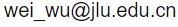

Changchun • China
I am an associate professor in Jilin University. Before moving to Jilin University, I was a research assistant professor at the Department of Mathematics of Hong Kong Baptist University from 2019 to 2022. I received a Bachelor's degree in 2013 from University of Science and Techonology of China, a Master's degree in 2015 from ETH Zürich, a Ph.D. in applied mathematics in 2018 from ETH Zürich under supervision of Prof. Habib Ammari. My research primarily focuses on the mathematical modeling of wave propagation in complex media, such as photonic and phononic crystals. By employing layer potential operators and asymptotic analysis, I develop rigorous mathematical frameworks to explain exotic physical phenomena observed in condensed matter physics.
I am currently recruiting Master's and Ph.D. students. Students interested in my research directions are warmly welcome to contact me by email.
公共数学课 • 吉林大学
Email:

WU Zhuoqun Building, Jilin University, Changchun, China